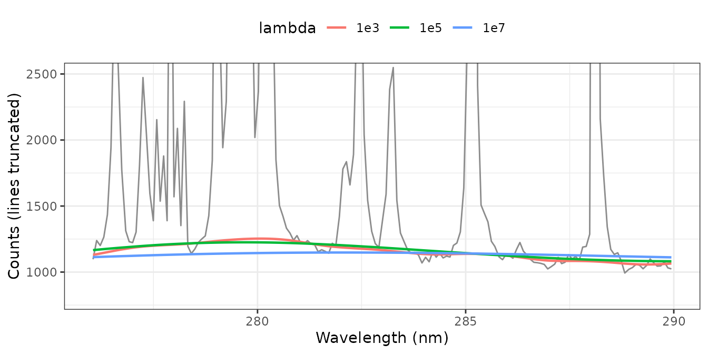
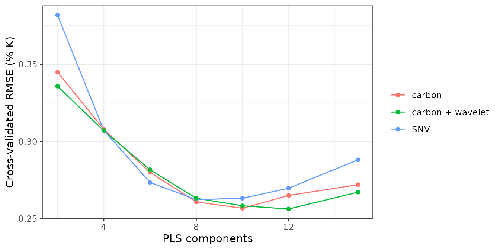
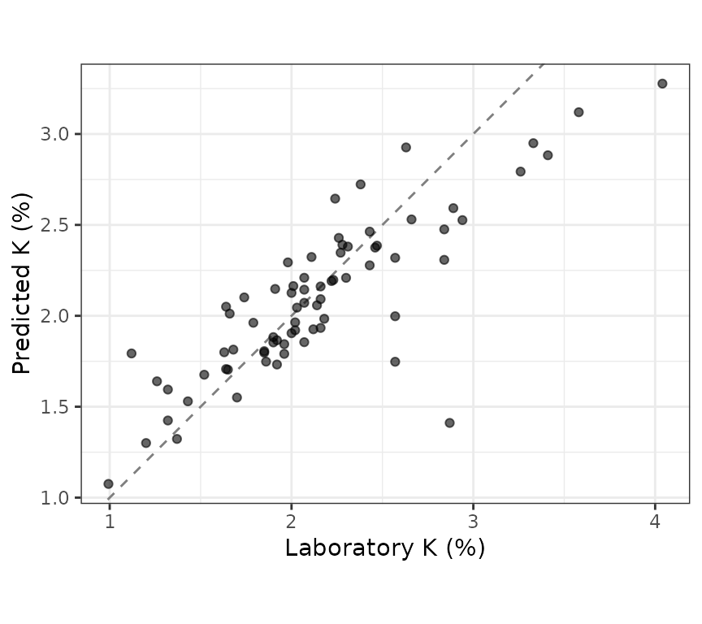

Preprocessing turns raw spectra into variables ready for modeling. In
specProc, each preprocessing method is also a recipes step
(step_*()). A recipe is estimated on training data
(prep()) and applied unchanged to new spectra
(bake()), and within a tidymodels workflow it is
re-estimated in every resample and can be tuned with the model. This
vignette builds a recipe for the forage spectra, and uses it to predict
potassium.
suppressPackageStartupMessages(library(mixOmics))
library(specProc)
library(recipes)
library(parsnip)
library(plsmod)
library(workflows)
library(tune)
library(rsample)
library(yardstick)
library(dplyr)
library(purrr)
library(ggplot2)
# mixOmics (the PLS engine) and MASS, which it attaches, have functions
# named like those of the tidyverse and tidymodels: use the latter
select <- dplyr::select
map <- purrr::map
tune <- tune::tune
data("forageLIBS")
spectra_id <- forageLIBS |> select(1:2) |> names()
minerals <- forageLIBS |> select(3:14) |> names()
spectra <- forageLIBS |> select(-all_of(c(spectra_id, minerals)))
wl <- as.numeric(names(spectra))The recipe predicts K from the spectral channels. The identifiers and the other elements keep a role of their own, so they are carried along but not used as predictors:
base <- recipe(K ~ ., data = forageLIBS) |>
update_role(all_of(spectra_id), all_of(setdiff(minerals, "K")), new_role = "id")Baseline correction
The continuum emission of the plasma and the detector offset add a
smooth background to every spectrum. step_baseline()
removes it, by default with asymmetrically reweighted penalized least
squares (baseline_arpls()). Its parameter
lambda sets the stiffness of the baseline: too small, it
cuts into the lines; too large, it misses the curvature of the
continuum. baseline_arpls() shows the baseline itself:
region <- wl > 276 & wl < 290
fitted_baselines <- map(c(`1e3` = 1e3, `1e5` = 1e5, `1e7` = 1e7), \(lambda) {
unlist(baseline_arpls(spectra[1, ], lambda = lambda, max.iter = 20)$background)[region]
})
first_spectrum <- tibble(wavelength = wl[region], counts = unlist(spectra[1, region]))
tibble(wavelength = wl[region], !!!fitted_baselines) |>
tidyr::pivot_longer(-wavelength, names_to = "lambda", values_to = "counts") |>
ggplot(aes(wavelength, counts)) +
geom_line(data = first_spectrum, colour = "grey55") +
geom_line(aes(colour = lambda), linewidth = 0.8) +
coord_cartesian(ylim = c(800, 2500)) +
labs(x = "Wavelength (nm)", y = "Counts (lines truncated)") +
theme_bw() +
theme(legend.position = "top")
With lambda = 1e7, the baseline is too stiff to follow
the broad hump of the continuum under the Mg lines near 280 nm; with
1e3, it starts to rise into the lines. 1e5
follows the continuum without touching them. lambda can
also be tuned with the model (lambda = tune(), with the
range of baseline_lambda()).
corrected <- base |>
step_baseline(all_predictors(), lambda = 1e5, options = list(max.iter = 20))Normalization
The intensity of every line changes from spectrum to spectrum with the ablated mass and the plasma conditions. Normalization divides each spectrum by a quantity that follows these changes:
| Step | Divides each spectrum by |
|---|---|
step_spectral_norm() |
its total area, or its L1, L2 or maximum norm |
step_snv() |
its standard deviation, after centering (standard normal variate) |
step_msc() |
a regression on the mean spectrum (multiplicative scatter correction) |
step_emsc() |
an extended model with a polynomial baseline |
step_line_ratio() |
the intensity of a reference line (internal standard) |
A good normalization brings the line intensities closer to the
concentrations. step_line_intensities() replaces the
channels by the intensities of chosen lines, so we compare the
normalizations by the correlation of each line with the laboratory
concentration of its element:
lines <- c(K = 769.896, Mg = 285.213, Ca = 317.933, Na = 589.592, Mn = 257.610, Fe = 259.940)
normalizations <- list(
none = identity,
area = \(r) step_spectral_norm(r, all_predictors(), method = "area"),
SNV = \(r) step_snv(r, all_predictors()),
MSC = \(r) step_msc(r, all_predictors()),
`C I 247.86` = \(r) step_line_ratio(r, all_predictors(), reference = 247.856, window = 0.15)
)
imap(normalizations, \(normalize, name) {
intensities <- corrected |>
normalize() |>
step_line_intensities(all_predictors(), lines = lines) |>
prep() |>
bake(new_data = NULL)
map_dbl(names(lines), \(e) cor(intensities[[paste0("line_", e)]], forageLIBS[[e]],
use = "complete.obs")) |>
set_names(names(lines))
}) |>
bind_rows(.id = "normalization") |>
mutate(across(-normalization, \(r) round(r, 2)))
#> # A tibble: 5 × 7
#> normalization K Mg Ca Na Mn Fe
#> <chr> <dbl> <dbl> <dbl> <dbl> <dbl> <dbl>
#> 1 none 0.54 0.42 0.5 0.76 0.7 0.92
#> 2 area 0.55 0.55 0.73 0.81 0.75 0.91
#> 3 SNV 0.63 0.48 0.65 0.8 0.75 0.92
#> 4 MSC 0.63 0.46 0.63 0.8 0.75 0.92
#> 5 C I 247.86 0.76 0.66 0.75 0.8 0.75 0.92Normalizing to the carbon line C I 247.86 nm gives the highest correlations for K, Mg and Ca. Carbon is the main element of the organic matrix, and its content varies little between forages: it is an internal standard. The other normalizations help less. The correlations of Na, Mn and Fe change little: their concentrations vary over a much wider range than the normalization factor.
Other steps
| Purpose | Steps |
|---|---|
| Smoothing, derivatives | step_savgol() |
| Compression |
step_wavelet() (wavelet coefficients),
step_line_intensities() (line intensities) |
| Scaling |
step_pareto_scale(),
step_poisson_scale()
|
| Removing unwanted variation |
step_epo(), step_glsw(),
step_osc(), step_direct_osc(),
step_projected_osc(), step_opls(),
step_o2pls(), step_y_gradient_glsw()
|
| Robust transformations |
step_robust_bcyj(), step_robpca(),
step_rospca(), step_macropca()
|
| Replicate shots | step_reject_shots() |
For example, step_wavelet() keeps the approximation
coefficients of a discrete wavelet transform, a smoothed spectrum with 8
times fewer values at level = 3:
corrected |>
step_wavelet(all_predictors(), level = 3) |>
prep() |>
bake(new_data = NULL) |>
select(starts_with("wav_")) |>
ncol()
#> [1] 894Steps that use the outcome, such as step_opls() or
step_osc(), must be estimated on training data only. Within
a workflow, this is automatic.
A model for potassium
We keep 20% of the samples for testing. The data hold a few repeated samples, so the splits keep the spectra of a sample together:
set.seed(1)
split <- group_initial_split(forageLIBS, group = Sample, prop = 0.8)
training_set <- training(split)
folds <- group_vfold_cv(training_set, group = Sample, v = 5)The model is a partial least squares (PLS) regression, from the mixOmics engine of parsnip, with its number of components tuned. We compare three recipes: baseline correction followed by SNV, by the carbon internal standard, or by the carbon standard and a wavelet compression:
baseline_step <- \(r) step_baseline(r, all_predictors(), lambda = 1e5, options = list(max.iter = 20))
carbon_step <- \(r) step_line_ratio(r, all_predictors(), reference = 247.856, window = 0.15)
recipes <- list(
SNV = base |> baseline_step() |> step_snv(all_predictors()),
carbon = base |> baseline_step() |> carbon_step(),
`carbon + wavelet` = base |> baseline_step() |> carbon_step() |>
step_wavelet(all_predictors(), level = 3)
)
# mixOmics scales every predictor by default; scale = FALSE only centers
pls_model <- pls(num_comp = tune()) |>
set_mode("regression") |>
set_engine("mixOmics", scale = FALSE)
tuned <- map(recipes, \(rec) {
tune_grid(workflow(rec, pls_model), resamples = folds,
grid = tibble(num_comp = c(2, 4, 6, 8, 10, 12, 15)),
metrics = metric_set(rmse, rsq))
})
map(tuned, \(res) show_best(res, metric = "rmse", n = 1)) |>
bind_rows(.id = "recipe") |>
select(recipe, num_comp, rmse = mean, std_err)
#> # A tibble: 3 × 4
#> recipe num_comp rmse std_err
#> <chr> <dbl> <dbl> <dbl>
#> 1 SNV 8 0.262 0.0187
#> 2 carbon 10 0.257 0.0183
#> 3 carbon + wavelet 12 0.256 0.0224
map(tuned, collect_metrics) |>
bind_rows(.id = "recipe") |>
filter(.metric == "rmse") |>
ggplot(aes(num_comp, mean, colour = recipe)) +
geom_line() +
geom_point() +
labs(x = "PLS components", y = "Cross-validated RMSE (% K)", colour = NULL) +
theme_bw()
The three recipes give similar errors once the number of components is tuned: PLS finds the potassium information in all of them, and the normalization matters less for a multivariate model than for a single line. The carbon + wavelet recipe is the best by a small margin. We refit it on the whole training set with its best number of components, and evaluate it once on the test samples:
final <- workflow(recipes[[best_recipe]], pls_model) |>
finalize_workflow(select_best(tuned[[best_recipe]], metric = "rmse")) |>
last_fit(split, metrics = metric_set(rmse, rsq))
collect_metrics(final)
#> # A tibble: 2 × 4
#> .metric .estimator .estimate .config
#> <chr> <chr> <dbl> <chr>
#> 1 rmse standard 0.321 pre0_mod0_post0
#> 2 rsq standard 0.694 pre0_mod0_post0The test error, 0.32% K, is somewhat larger than the cross-validated one (0.26%): with 74 test spectra, it is itself uncertain.
collect_predictions(final) |>
ggplot(aes(K, .pred)) +
geom_abline(colour = "grey50", linetype = "dashed") +
geom_point(alpha = 0.6) +
coord_equal() +
labs(x = "Laboratory K (%)", y = "Predicted K (%)") +
theme_bw()
The fitted workflow applies every step, with the values estimated on
the training data, to new spectra:
predict(extract_workflow(final), new_data). The prepped
recipe also shows what each step estimated, with tidy().
The next vignette, vignette("calibration"), builds
univariate calibration curves and computes the figures of merit of both
kinds of models.